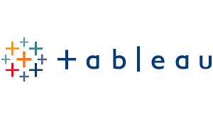

Welcome to my data-driven world! I’m Farah, an avid explorer of datasets, trends, and insights. Here, I blend analytical precision with creative flair, transforming raw numbers into captivating narratives:
🔍 What You’ll Find:
Visualizations: Dive into interactive charts, maps, and graphs that breathe life into data.
Case Studies: Explore real-world projects>
Skills Showcase: From Python to SQL, I’ve got a toolkit ready for data magic.
Blog: Join me on my analytical journey as I decode complex concepts and share tips.
🌟 Why “Data Canvas”? Just like an artist’s canvas, data awaits its masterpiece.
Let’s paint stories, uncover patterns, and ignite curiosity together.
So grab your virtual magnifying glass, and let’s explore the hidden gems within the numbers! 🚀🎨🔍
In this project I take a raw Housing data and transform it in SQL server to make it a reliable dataset ready for insightful analysis.

In this project I’ll focus on tasks like identifying and removing duplicates, standardizing data, handling missing values, and removing unnecessary columns in MYSQL using a dataset about layoffs. These steps ensure that the dataset is reliable and ready for insightful analysis.
In this project, I Explored and analyzed the latest global Covid-19 Deaths and Vaccinations using SQL.
I gathered the data from Our World in Data, then I formatted the data set a bit in Excel, after that I started to Querying it in SQL.

This poject is about Exploring The layoffs dataset after Cleaning it before which set me up to explore the data IN MYSQL, and with all that clean data I'll be able to look at the dataset much better and find better insights while using it.

Here we are going to explore the APPLE STORE Data in SQL and see what will help us to answer our insights.

In this project I am going to explore historical Formula 1 results in SQL.

TABLEAU Dashboards for projects on Covid-19 Global Deaths and Vaccinations, Apple Store Apps Rating, AirBnB, and Historical F1 Results.